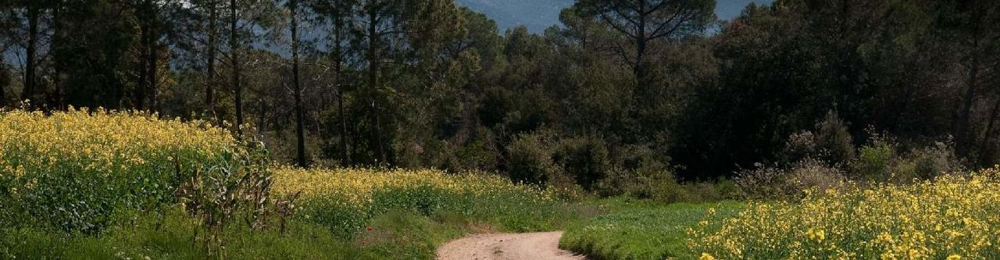

Ruta · Palautordera
Aquest itinerari circular per la falda del Montseny, vol presentar els ambients naturals més característics tot encerclant els pobles de Santa Maria i Sant Esteve de Palautordera .Sortim de la…